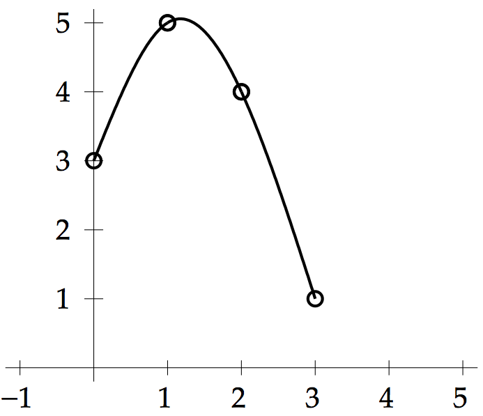
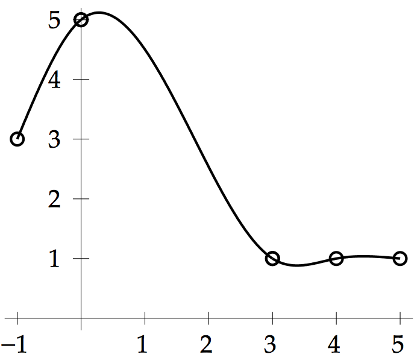
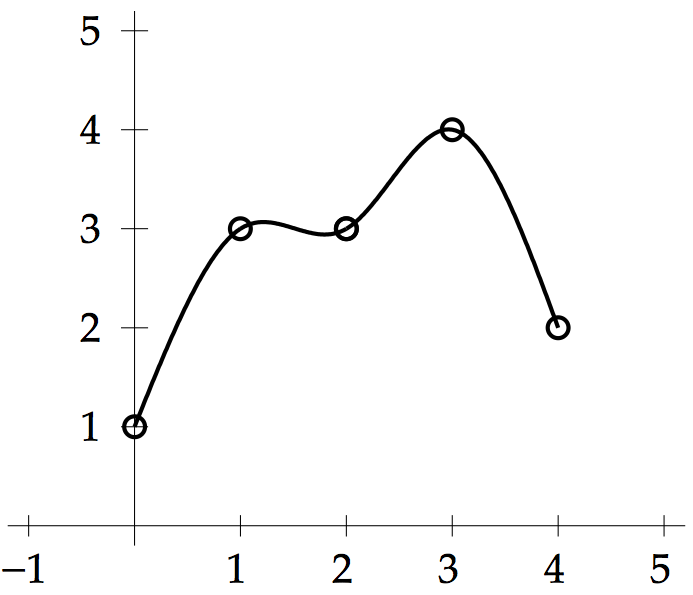
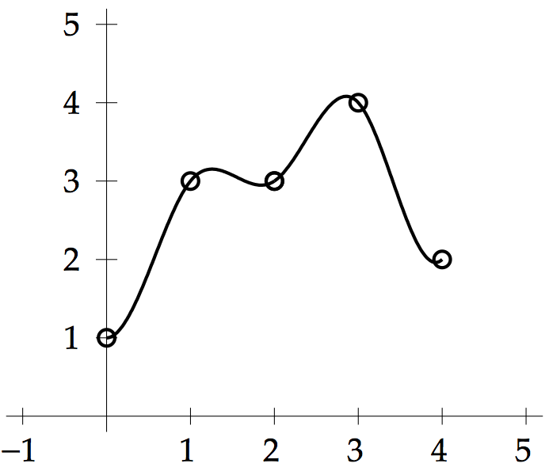
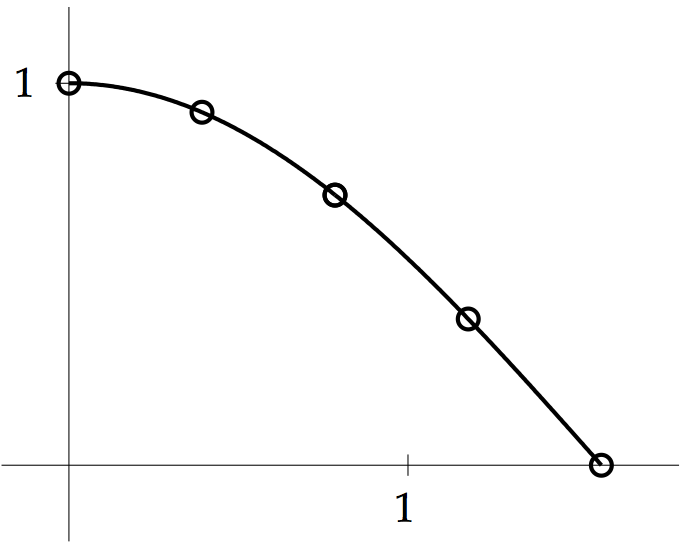
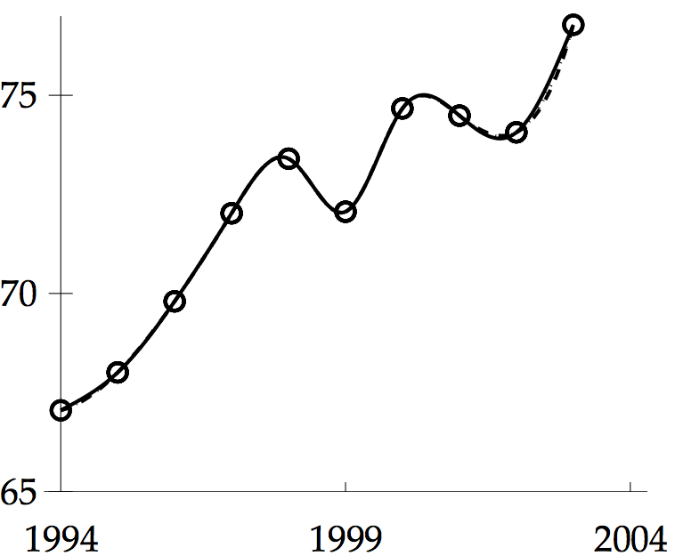

COMPUTER PROBLEMS 3.4
\(\def\ds{\displaystyle} \)
1 (a) Programs 3.5 and 3.6 can be used to compute the spline coefficients and
plot the spline, respectively. The command
>> c=splinecoeff([0 1 2 3],[3 5 4 1])
returns the spline coefficients
\[
\left\{ \begin{array}{ll}
S_0(x) = 3+\frac{8}{3}x-\frac{2}{3}x^3 &\mbox{ on \([0,1]\)}\\
S_1(x) = 5+\frac{2}{3}(x-1)-2(x-1)^2+\frac{1}{3}(x-1)^3 &\mbox{ on \([1,2]\)}\\
S_2(x) = 4-\frac{7}{3}(x-2)-(x-2)^2+\frac{1}{3}(x-2)^3 &\mbox{ on \([2,3]\)}\\
\end{array}\right. .\]
The plot from
>> splineplot([0 1 2 3],[3 5 4 1],10)
is shown on the left below.
1 (b) Programs 3.5 and 3.6 can be used as in (a) to compute the spline coefficients and
plot the spline. The result is
\[
\left\{ \begin{array}{ll}
S_0(x) = 3+2.5629(x+1)-0.5629(x+1)^3 &\mbox{ on \([-1,0]\)}\\
S_1(x) = 5+0.8742x-1.6887x^2+0.3176x^3 &\mbox{ on \([0,3]\)}\\
S_2(x) = 1-0.6824(x-3)+1.1698(x-3)^2-0.4874(x-3)^3 &\mbox{ on \([3,4]\)}\\
S_3(x) = 1+0.1950(x-4)-0.2925(x-4)^2+0.0975(x-4)^3 &\mbox{ on \([4,5]\)}\\
\end{array}\right. .\]
The plot of the natural cubic spline is shown on the right below.


3 The spline is natural, and Programs 3.5 and 3.6 calculate
\[
\left\{ \begin{array}{ll}
S_0(x) = 1+2.6607x-0.6607x^3 &\mbox{ on \([0,1]\)}\\
S_1(x) = 3+0.6786(x-1)-1.9821(x-1)^2+1.3036(x-1)^3 &\mbox{ on \([1,2]\)}\\
S_2(x) = 3+0.6250(x-2)+1.9286(x-2)^2-1.5536(x-2)^3 &\mbox{ on \([2,3]\)}\\
S_3(x) = 4-0.1786(x-3)-2.7321(x-3)^2+0.9107(x-3)^3 &\mbox{ on \([3,4]\)}\\
\end{array}\right. .\]

5 The cubic spline is clamped, and can be found by Programs 3.5 and 3.6 with the
clamped conditions enabled and variables v1 = 0 and vn = 1.
\[
\left\{ \begin{array}{ll}
S_0(x) = 1+4.6786x^2-2.6786x^3 &\mbox{ on \([0,1]\)}\\
S_1(x) = 3+1.3214(x-1)-3.3571(x-1)^2+2.0357(x-1)^3 &\mbox{ on \([1,2]\)}\\
S_2(x) = 3+0.7143(x-2)+2.7500(x-2)^2-2.4643(x-2)^3 &\mbox{ on \([2,3]\)}\\
S_3(x) = 4-1.1786(x-3)-4.6429(x-3)^2+3.8214(x-3)^3 &\mbox{ on \([3,4]\)}\\
\end{array}\right. .\]

7 Program 3.5 can be used to find the cubic spline.
The clamps v1 and vn should be chosen to match the derivatives at
the endpoints, namely \(S'(0)= -\sin 0 = 0\) and \(S'(\pi/2) = -\sin \pi/2 = -1\),
respectively. The cubic spline is plotted below along with the cosine curve,
although they are indistinguishable at this resolution.
\[
\left\{ \begin{array}{ll}
S_0(x) = 1-0.5065x^2+0.0327x^3 &\mbox{ on \([0,\frac{\pi}{8}]\)}\\
S_1(x) = 0.9239-0.3826(x-\frac{\pi}{8})-0.4679(x-\frac{\pi}{8})^2+0.0931(x-\frac{\pi}{8})^3 &\mbox{ on \([\frac{\pi}{8},\frac{\pi}{4}]\)}\\
S_2(x) = 0.7071-0.7070(x-\frac{\pi}{4})-0.3582(x-\frac{\pi}{4})^2+0.1396(x-\frac{\pi}{4})^3 &\mbox{ on \([\frac{\pi}{4},\frac{3\pi}{8}]\)}\\
S_3(x) = 0.3827-0.9237(x-\frac{3\pi}{4})-0.1937(x-\frac{3\pi}{4})^2+0.1639(x-\frac{3\pi}{4})^3 &\mbox{ on \([\frac{3\pi}{8},\frac{\pi}{2}]\)}\\
\end{array}\right. .\]

9 The clamped cubic spline can be calculated from Program 3.5 after
setting the clamps \(S'(1)= f'(1) = 1\) and \(S'(3) = f'(3) = 1/3\). The spline is
\[
\left\{ \begin{array}{ll}
S_0(x) = (x-1)-0.4638(x-1)^2+0.1713(x-1)^3 &\mbox{ on \([1,\frac{3}{2}]\)}\\
S_1(x) = 0.4055+0.6647(x-\frac{3}{2})-0.2068(x-\frac{3}{2})^2+0.0563(x-\frac{3}{2})^3 &\mbox{ on \([\frac{3}{2},2]\)}\\
S_2(x) = 0.6931+0.5001(x-2)-0.1224(x-2)^2+0.0295(x-2)^3 &\mbox{ on \([2,\frac{5}{2}]\)}\\
S_3(x) = 0.9163+0.3998(x-\frac{5}{2})-0.0782(x-\frac{5}{2})^2+0.0155(x-\frac{5}{2})^3 &\mbox{ on \([\frac{5}{2},3]\)}\\
\end{array}\right. .\]
The maximum difference between the spline and the function \(f(x)=\ln x\) can be
determined by a slight modification of Program 3.5. The maximum interpolation
error on \([1,3]\) is approximately \(0.0005464\).
11 (a) The natural cubic spline through the four data points is
\[
\left\{ \begin{array}{ll}
S_0(x) = 3039585530+64621942(x-1960)+21671(x-1960)^3 \\
S_1(x) = 3707475887+71123224(x-1970)+650128(x-1970)^2-13542(x-1970)^3 \\
S_2(x) = 5281653820+80877678(x-1990)-162405(x-1990)^2+5414(x-1990)^3 \\
\end{array}\right. \]
on \([1960, 1970], [1970, 1990]\) and \([1990, 2000]\) respectively.
Substituting \(x=1980\) gives the estimate \(4470178717\).
11 (b) Using the data points, we can estimate the derivatives at the
left and right endpoints as \((3707475887-3039585530)/10 = 66789036\) and
\((6079603571-5281653820)/10 = 79794975\), respectively. The clamped cubic
spline through the four points is
\[
\left\{ \begin{array}{ll}
S_0(x) = 3039585530+66789036(x-1960)-362212(x-1960)^2+36221(x-1960)^3 \\
S_1(x) = 3707475887+70411154(x-1970)+724424(x-1970)^2-15477(x-1970)^3 \\
S_2(x) = 5281653820+80815906(x-1990)-204186(x-1990)^2+10209(x-1990)^3 \\
\end{array}\right. \]
on \([1960, 1970], [1970, 1990]\) and \([1990, 2000]\) respectively.
Substituting \(x=1980\) gives the estimate \(4468552974\). The natural cubic spline estimate
misses the actual 1980 population by 17.6 million, while the clamped spline misses
by 16 million, and is slightly closer.
13 Program 3.6 can be adapted to plot the three different cubic splines. They
are barely distinguishable in the following plot; the solid curve is natural, the
dashed curve is not-a-knot, and the dotted curve is parabolically-terminated.
